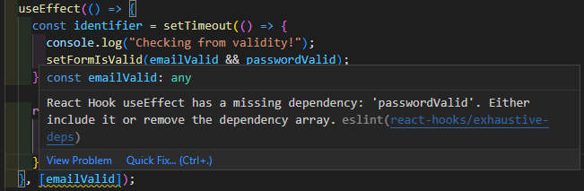

Rules of Hooks
到目前為止已經介紹過不少 React Hooks，這章節將進一步這些 hooks 在使用上的限制
Only call React Hooks in React Functions
只有在兩種環境才使用 React Hooks
- React Components Functions
這在前面章節也不斷提到，React Hooks 無法運行在 Components Function 之外 - Custom Hooks
這在之後的章節會再進一步介紹，React Hooks 還可以客製化生成
Only call React Hooks in Top Level
- Don’t call them in nested Functions
在滿足第一個前提之下，React Hooks 只能直接被使用，無法再被其他 function 封裝 - Don’t call them in any block statements
不只是 function 內，所有 block statements (if、switch…) 也無法使用
Unofficial Rule for useEffect()
還有一個關於 useEffect() 的非官方限制，那就是如果在 useEffect() callback function 中參照的資料，那它就應該被加入 dependency，較現代 IDE 如 VSCode 就會直接給予提示
1 | useEffect(() => { |

資料參考
React - The Complete Guide (Incl Hooks, React Router, Redux)
GitHub